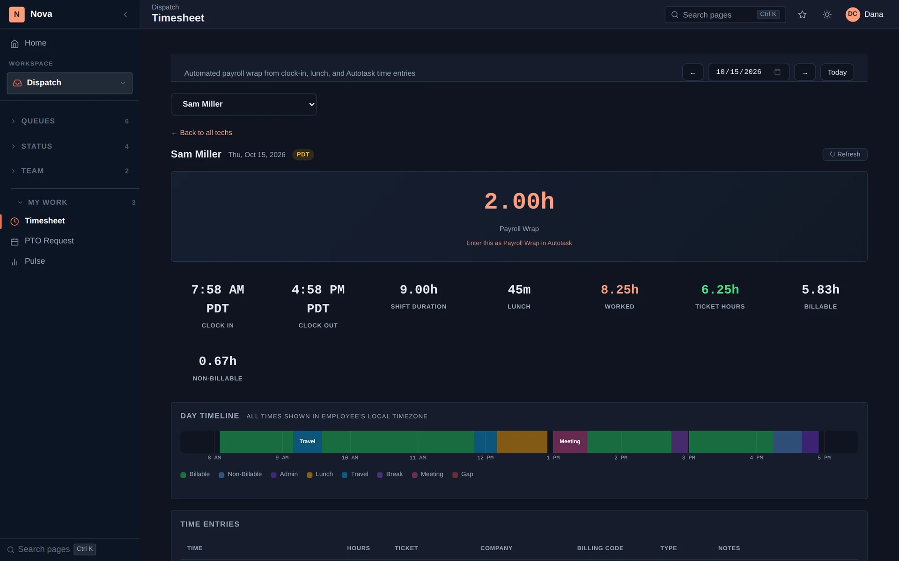

Nova is the time clock too. Clock-ins, lunch, breaks, PTO and ticket time all land in one timesheet per tech per day, so payroll is a quick check instead of a day of piecing things together.

Clock in, lunch, breaks and clock out from the web, the tablet or the phone. Missed clock-outs go to a manager to approve.
Each tech's day on a single timeline — clock events beside the Autotask time entries — with the day's payroll hours worked out.
Managers review and correct timesheets before payroll, with attendance variances flagged.
Payroll and payroll-variance reports for the period, ready to print or hand to your payroll provider.
PTO and sick requests with approvals, and a calendar dispatch can plan around.
Travel time and mileage logged with each trip, plus schedules and a map of where the team is checked in.
At Techital, running payroll used to take a full day of piecing together clock-ins, lunches and time entries. With everything in one timesheet per tech, it now takes under 30 minutes.
In the demo we'll show a full week of timesheets and the payroll report that comes out of them.